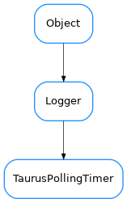

TaurusPollingTimer¶

-
class
TaurusPollingTimer(period, parent=None)[source]¶ Bases:
taurus.core.util.log.LoggerPolling timer manages a list of attributes that have to be polled in the same period
-
addAttribute(attribute, auto_start=True)[source]¶ Registers the attribute in this polling.
- Parameters
attribute (
TaurusAttribute) – the attribute to be addedauto_start (
bool) – if True (default) it tells the polling timer that it should startup as soon as there is at least one attribute registered.
-
containsAttribute(attribute)[source]¶ Determines if the polling timer already contains this attribute
- Parameters
attribute (
TaurusAttribute) – the attribute- Return type
- Returns
True if the attribute is registered for polling or False otherwise
-
getAttributeCount()[source]¶ Returns the number of attributes registered for polling
- Return type
- Returns
the number of attributes registered for polling
-